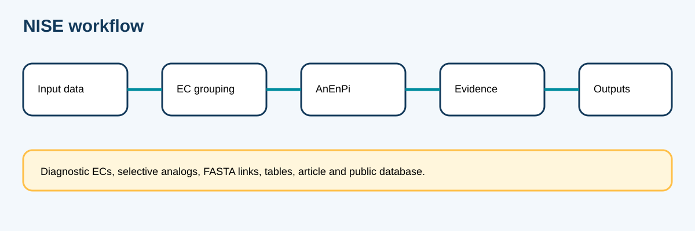
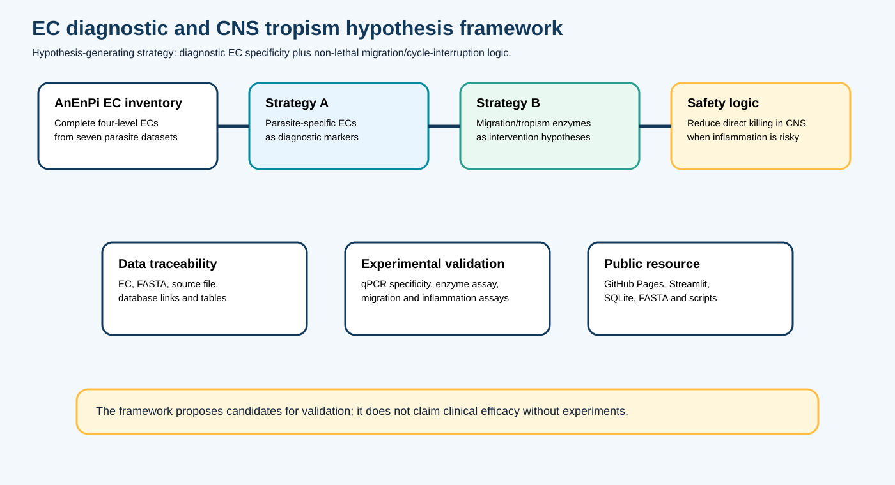

Abstract
Neurologically relevant helminth infections remain difficult to treat safely because parasite death in sensitive tissues may intensify inflammation. This resource applies an AnEnPi-derived comparative enzymology framework to identify non-homologous isofunctional enzyme candidates, parasite-specific EC candidates for molecular diagnosis, and anti-migration or cycle-interruption hypotheses that may reduce neuroinvasion risk rather than simply maximize rapid parasiticidal pressure.
Figure 1. Workflow

{kind=link}
Hypothesis framework

Figure 2 separates diagnostic EC specificity from non-lethal intervention hypotheses related to migration, CNS tropism, persistence and cycle modulation. These are hypothesis-generating layers and require experimental validation.
{kind=link}
{kind=link}
{kind=link}
{kind=link}
{kind=link}
{kind=link}
Manuscript versions
The complete DOCX/PDF manuscript set is included in the downloadable release package. Text and data files are hosted in this repository; binary manuscripts should be uploaded through Git LFS or local git push.
Tables and downloads
Proteome catalog
| Dataset | Organism | Project or assembly | FASTA | Database |
|---|---|---|---|---|
| aac | Angiostrongylus cantonensis | PRJEB493 / WBPS2 | angiostrongylus_cantonensis.PRJEB493.WBPS2.protein_60.fa | WormBase |
| anc | Angiostrongylus cantonensis transcriptome | PubMed 33729108 | unica_more_60_cd-hit.fasta | PubMed |
| ecg | Echinococcus granulosus | GCA_000469785.1 | GCA_000469785.1_EGRAN001_protein_Echinococus_gran.faa_60.faa | NCBI |
| ecm | Echinococcus multilocularis | GCA_000469725.2 | GCA_000469725.2_ASM46972v2_protein_Echinococcus_multilocularis_60.faa | NCBI |
| tas | Taenia solium | PRJNA170813 / WBPS3 | taenia_solium.PRJNA170813.WBPS3.protein.fa_60.fa | WormBase |
| onv | Onchocerca volvulus | PRJEB513 / WBPS3 | onchocerca_volvulus.PRJEB513.WBPS3.protein_60.fa | WormBase |
| tox | Toxocara canis | GCA_000803305.1 | GCA_000803305.1_Toxocara_canis_adult_r1.0_protein_60.faa | NCBI |
Representative core ECs
Diagnostic and anti-migration hypotheses
How to cite
If you use these data, tables, FASTA files, scripts, figures, database, or web resource, please cite the associated article: Non-homologous isofunctional enzyme candidates in neurologically relevant helminths.